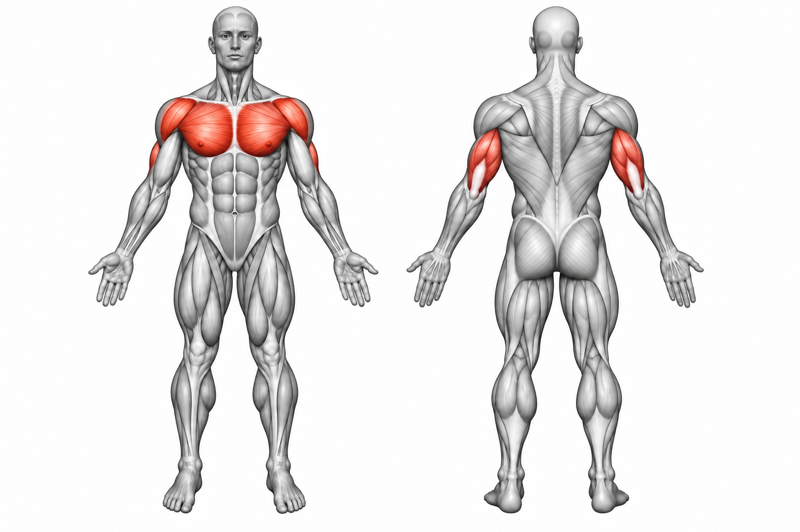
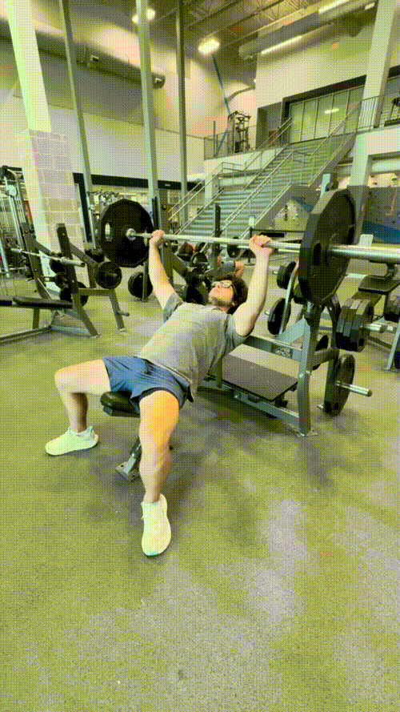

Incline Bench Press


How to Perform
Set the bench to a moderate incline and lie back with your feet planted firmly on the floor. Grip the bar slightly wider than shoulder-width apart and keep your upper back supported against the bench.
Unrack the bar and lower it under control toward the upper portion of your chest. Keep your elbows slightly tucked as you press the bar upward until your arms are extended.
Primary Muscles
Pectoralis major (Upper Chest)
Secondary Muscles
Anterior deltoid (Front Delt) and triceps brachii (Triceps)